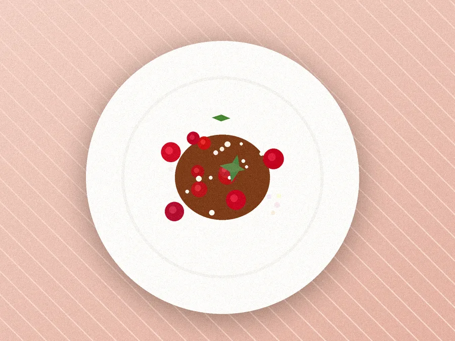
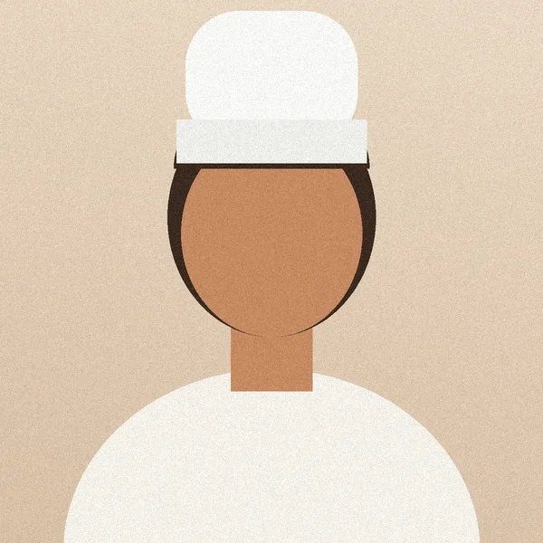
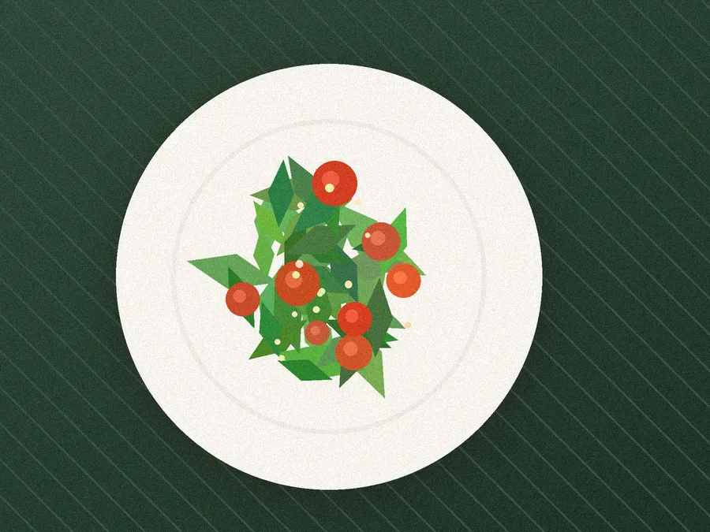
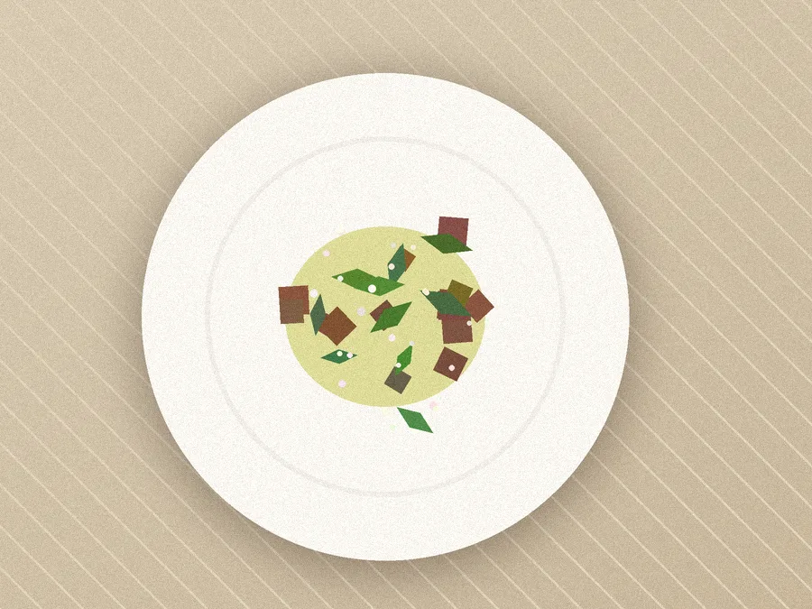
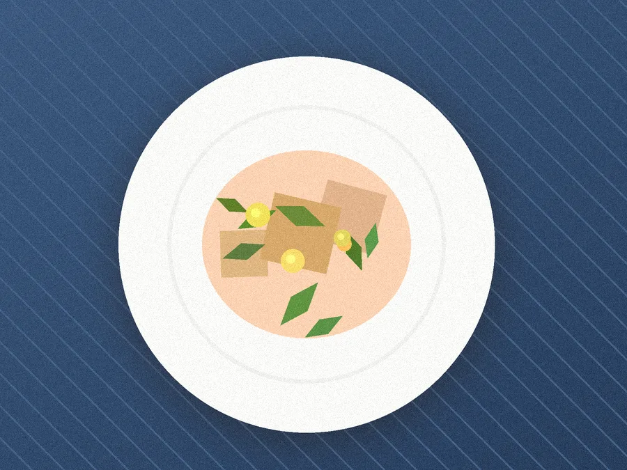
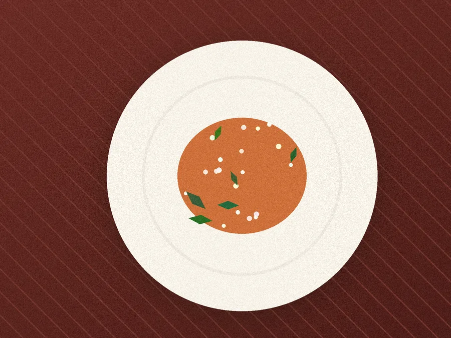
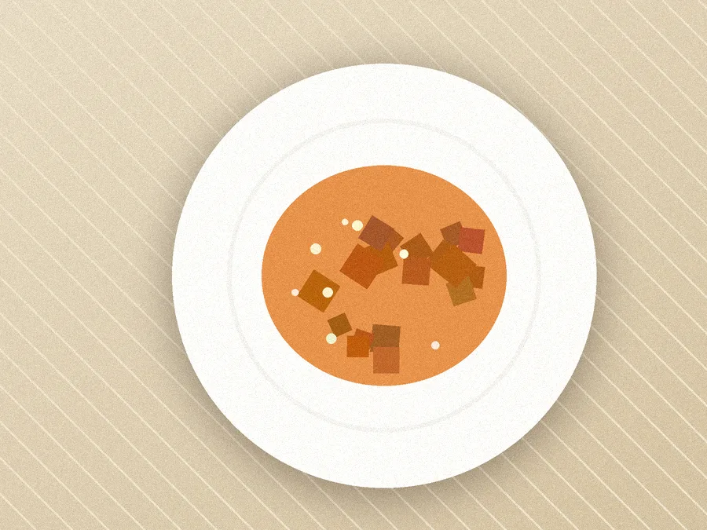

★★★★★
« La joue de bœuf fond en bouche. Service rapide le midi, parfait quand on travaille à côté. »
Nadia, octobre 2026BISTROT DE SAISON · LYON 2E
Tout ce que nous cuisinons vient de producteurs installés à moins de 80 km. La carte change chaque mois, le menu du midi chaque jour.
Réserver une table Voir la carte
Le menu du midi
Rayon de nos producteurs
Midi et soir

LE CHEF
Formé chez les Mères lyonnaises puis à Paris, Thomas a ouvert Le Comptoir en 2019 avec une idée simple : servir ce que les producteurs du coin ont de meilleur cette semaine.
« Je ne choisis pas mes plats, ce sont les saisons qui les choisissent. »
Menu du midi : entrée + plat ou plat + dessert, 19 €. Menu complet, 24 €.
Noisettes torréfiées, crème crue
Champignons des bois, mouillettes au beurre
Frisée, lardons, croûtons, œuf poché
Carottes glacées, jus réduit au vin de Brouilly
Parmesan affiné 24 mois, huile de noisette
Beurre blanc, poireaux fondants
La recette lyonnaise, pâte sablée maison
Framboises, chantilly à la vanille
Affiné par la Mère Richard
Prix nets, service compris. Allergènes : demandez la fiche détaillée en salle.





★★★★★
« La joue de bœuf fond en bouche. Service rapide le midi, parfait quand on travaille à côté. »
Nadia, octobre 2026★★★★★
« Une vraie cuisine de saison, une carte courte et tout est fait maison. On reviendra. »
Julien, septembre 2026★★★★★
« Excellent rapport qualité-prix. Pensez à réserver le vendredi soir. »
Hélène, septembre 2026
12 rue Mercière, 69002 Lyon
Métro A, station Cordeliers
04 78 00 00 00
| Jour | Midi | Soir |
|---|---|---|
| Mardi – Vendredi | 12h – 14h | 19h – 22h30 |
| Samedi | Fermé | 19h – 23h |
| Dimanche – Lundi | Fermé | |